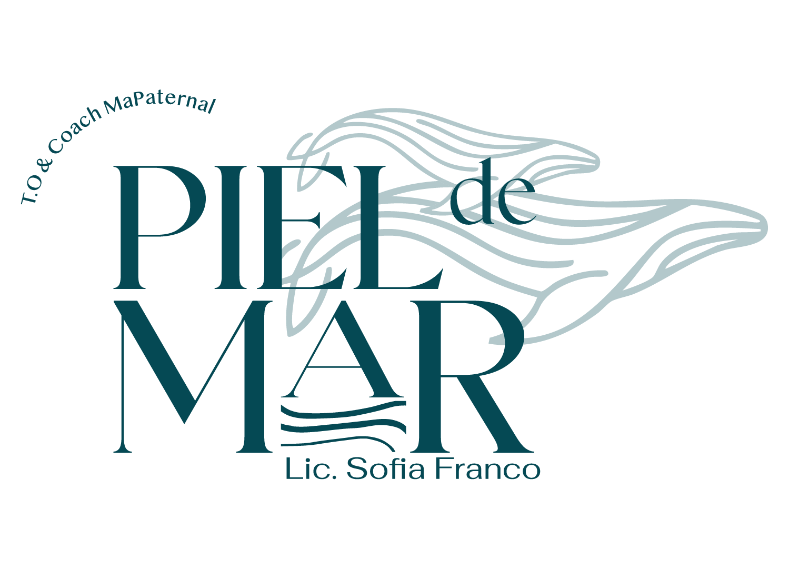

Momentos de conexión
Rutinas y rituales para crear vínculos profundos con tus hijos

Buscar orientación a tiempo puede generar cambios significativos en el bienestar de tu hijo y en la tranquilidad de toda la familia.
Quiero orientación profesionalUna guía para acompañarte en el cuidado y bienestar de tu familia
Rutinas y rituales para crear vínculos profundos con tus hijos
Herramientas para cultivar la armonía y el equilibrio en casa
Potenciamos el desarrollo integral de tu hijo con actividades adaptadas a su edad.
Quiero saber másBrindamos herramientas para acompañar al niño en su regulación emocional.
Quiero saber másIdentificamos señales de alerta e intervenimos tempranamente.
Quiero saber másOrientamos y acompañamos una crianza consciente y respetuosa de los vínculos.
Quiero saber más"Llegamos con muchas dudas y angustia. El acompañamiento fue fundamental para entender qué le pasaba a nuestro hijo y cómo ayudarlo. Hoy vemos cambios reales."
"No solo trabajaron con nuestra hija, nos dieron herramientas para aplicar en casa. Sentimos que somos parte activa de su desarrollo."
"La diferencia está en el trato humano y en que realmente escuchan nuestras preocupaciones. No nos sentimos juzgados, sino acompañados."
"Encontré en Piel de Mar un espacio donde me escucharon sin juzgarme. Las orientaciones fueron claras y pudimos aplicarlas enseguida en casa."
"Lo que más valoro es que trabajan con toda la familia. No solo con el niño. Eso hace una diferencia enorme en los resultados."
Contenido basado en evidencia, diseñado para brindarte información que podés aplicar hoy.
Elegí el día y horario que mejor se adapte a tu agenda
Seleccioná una fecha en el calendario para ver los horarios disponibles
Las consultas pueden ser presenciales o virtuales
Estamos acá para escucharte y acompañarte
Cullen 1619, Esperanza
Santa Fe, Argentina
Lunes a Viernes
9:00 a 18:00 hs